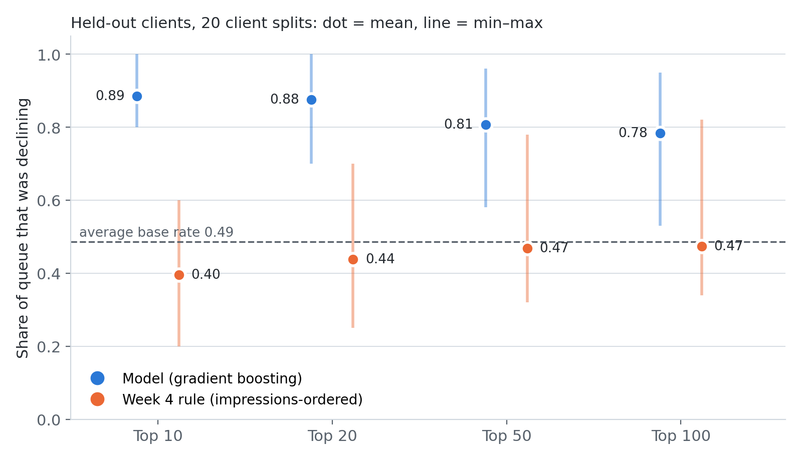
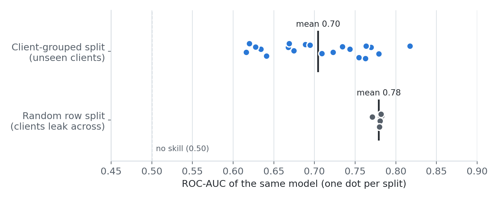
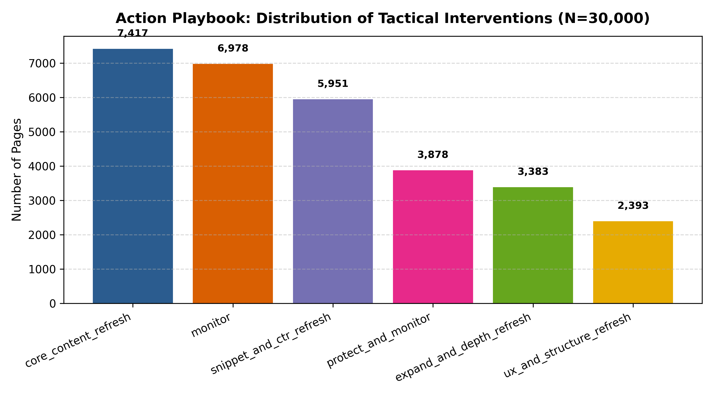
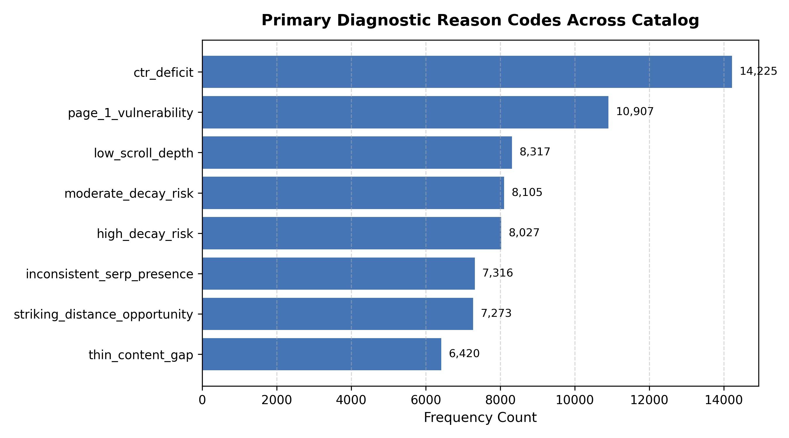

FlyRank publishes and monitors content across many client websites, where pages that once ranked can quietly lose search visibility while editors can review only a few dozen a week, so the useful question is which pages to look at first: can a model trained on observable search and engagement signals rank pages that are losing impressions above a transparent hand-written rule, on clients it has never seen? We used the FlyRank ML Internship starter slice (30,000 anonymized pages from 32 clients, trailing 90-day Google Search Console and GA4 metrics) and labelled a page as declining when its last-30-day impressions fell more than 20% versus the previous 30 days. A gradient-boosted classifier was compared with our Week 4 striking-distance rule on identical client-grouped test sets, repeated over 20 different client splits so that no single lucky split carries the result. Across those splits the model's top-10 queue averaged 89% declining pages (range 80–100%) against 40% for the rule, and its top-50 averaged 81% against 47%, beating the rule on every split. Part of that gain comes from 90-day features that overlap the label window: using only data from before it, the model still leads (top-10 72%, top-50 68%, ROC-AUC 0.63), but by less. We turn the scores into a ranked, reason-coded review queue for human editors: a decision-support tool for where to look first, not evidence that a refresh will cause recovery.
Picture a content team with 20,000 published pages and time to review 20 of them this week. Each slot spent on a page that is fine is a slot not spent on one that is slipping. The decision this work supports is narrow and concrete: which pages go into this week's review queue, and in what order.
FlyRank researches, writes and publishes content directly into client websites, then watches Google Search Console and GA4 data to keep that content performing. Across many clients and thousands of pages, the recurring problem is decay: a page ranks, then rankings slip and clicks fall, and it is easy to notice too late.
Today, pages are flagged for attention with hand-written rules: a health score, quick-win tags, needs-attention flags. These are if-this-then-that rules with hand-picked thresholds. They are transparent and they run in production, but rules get harder to tune as signals multiply and interact. This paper asks whether a trained model can order the review queue better than a rule of that kind.
One boundary matters. FlyRank's production flags are deliberately not in the internship data, so this paper does not compare against them. The baseline is our own Week 4 rule, built in the same style from the same observable signals. The results show what a model adds over a rule of that kind. They are not a verdict on FlyRank's product.
Our Week 4 baseline encoded a common SEO intuition: review pages in "striking distance" (average position 4–20) that are consistently visible, ordered by impressions. The ordering is the weak point. It pushes the largest pages to the top, and large, steady pages are often not the ones losing ground. On the held-out clients used in Week 5, the rule's top 10 contained only 2 declining pages, fewer than picking at random would give.
Research question. On clients the model has never seen, does a model trained on observable 90-day search and engagement signals rank declining pages above the Week 4 rule, and does that hold across many different client splits rather than just one?
content_refresh_anonymized.csv. It is one table with 30,000 rows × 44 columns, one row per content item, from 32 pseudonymized clients. It combines Google Search Console visibility with GA4 engagement.flyrank_pseudonymized_warehouse_release_v20260703). It was only queried for the Week 3 data contract. Re-earning these results on it is future work.trend_direction = 'down') when the change is below −20%.trend_direction, trend_pct: they define the label.*_last_30d and *_prev_30d columns: the label is computed from them.client_id, content_id: pseudonyms used only to group the train/test split, never as features.provider_used, model_used: tooling metadata, not search evidence.The slice contains no client names, domains, URLs, page titles or search queries, and this page reports only aggregates.
We used 24 features: 18 numeric (log traffic, CTR, active days, average position, keyword volume, CPC and competition, content age, days since update, word count, engagement and scroll rates, AI-referral share, plus has_ flags for missing values) and 6 categorical buckets (content type, intent, competition level, freshness, position tier and word-count tier). The working assumption is that a page's 90-day profile carries information about whether its last 30 days look worse than the 30 before. The windows overlap in time, so this tests association within one snapshot, not a forecast of a later period.
Pages that pass all three gates are ordered by impressions, and every other page scores 0.
HistGradientBoostingClassifier (max depth 5, min leaf 25, balanced class weights) after scaling numeric features and one-hot encoding categories. Logistic regression is reported alongside as a simpler reference.
GroupShuffleSplit on client_id), so every test page comes from a client the model never saw. This mirrors onboarding a new client.
| 20 client splits (mean ± sd) | Week 4 rule | Gradient boosting, strict features | Logistic regression | Gradient boosting |
|---|---|---|---|---|
| Precision@10 | 0.40 ± 0.13 | 0.72 ± 0.19 | 0.82 ± 0.12 | 0.89 ± 0.08 |
| Precision@20 | 0.44 ± 0.11 | 0.70 ± 0.15 | 0.80 ± 0.09 | 0.88 ± 0.09 |
| Precision@50 | 0.47 ± 0.14 | 0.68 ± 0.13 | 0.78 ± 0.08 | 0.81 ± 0.11 |
| Precision@100 | 0.47 ± 0.14 | 0.67 ± 0.14 | 0.76 ± 0.09 | 0.78 ± 0.11 |
| ROC-AUC | 0.54 ± 0.04 | 0.63 ± 0.05 | 0.67 ± 0.05 | 0.70 ± 0.06 |
| Test base rate | 0.49 on average (range 0.25–0.61) | |||
The model with 90-day features beat the rule on all 20 splits for every metric, and its top-50 beat that split's own base rate on all 20. The strict-feature model beat the rule on ROC-AUC in all 20 splits, and on top-10 precision in 16 of 20. Single splits still vary a lot. Model Precision@50 ranged from 0.58 to 0.96, so a given week on a given client can look much worse than the average.
Our first comparison used a single split (seed 42: 7 held-out clients, 6,163 pages, base rate 51.1%):
| Seed-42 split | Week 4 rule | Gradient boosting | Base rate |
|---|---|---|---|
| Precision@10 | 0.20 (2/10) | 0.90 (9/10) | 0.51 |
| Precision@20 | 0.35 (7/20) | 0.90 (18/20) | 0.51 |
| Precision@50 | 0.42 (21/50) | 0.80 (40/50) | 0.51 |
| Precision@100 | 0.39 (39/100) | 0.76 (76/100) | 0.51 |
| ROC-AUC | 0.49 | 0.62 | 0.50 |
That split was the rule's worst Precision@10 among the 20 and one of the model's lowest AUCs. The "9 of 10 vs 2 of 10" contrast is real, but the 4.5× ratio it suggests is not typical. The 20-split average (0.89 vs 0.40, about 2.2×) is the fairer comparison.

In Week 6 we reported a 0.163 AUC gap (0.783 random vs 0.620 grouped). That figure paired one random split with the hard seed-42 client split. Averaged over many splits, the inflation is about 0.075 AUC. That is still large enough that a random split would mislead anyone onboarding a new client.
A page's 90-day traffic includes the same last 30 days that decide its label. To measure how much that helps, the same model was retrained on strict features: traffic from days 61–90 only, plus static page and keyword fields, all known before the label window starts.
| 20 client splits (mean) | Precision@10 | Precision@50 | ROC-AUC |
|---|---|---|---|
| Gradient boosting, 90-day features | 0.89 | 0.81 | 0.70 |
| Gradient boosting, strict features | 0.72 | 0.68 | 0.63 |
| Week 4 rule | 0.40 | 0.47 | 0.54 |
About two-thirds of the model's lead over the rule at the top of the queue survives the strict cut (top 10: +0.49 becomes +0.33). The rest came from features that partly describe the label window. The strict model is also noisier: its top-10 precision ranged from 0.40 to 1.00 across splits. Read the 90-day numbers as an upper bound and the strict numbers as a more cautious estimate. A true forward-in-time test on the warehouse would settle it.
Sorting by decline probability alone surfaces tiny pages with little traffic at stake. The Week 7 playbook blends three signals into a 0–100 priority. The weights are a judgment call, not fitted:
Position leverage is 1.00 for positions 4–10, 0.90 for 10–20, 0.60 for 1–3, 0.40 for 20–50, 0.20 beyond 50, and 0.15 for pages with no position data. The blend costs some precision. On the seed-42 held-out clients, the queue's top 50 was 66% declining, against 80% for the raw model and 42% for the rule. In exchange, it surfaces pages with more traffic at stake.
Metrics can hide what kind of pages a queue puts first, so the top 20 of the queue on the held-out clients were reviewed one by one, using coarse buckets only. 16 of 20 were really declining, against a base rate of 0.51. The 4 misses were stable or growing pages, not borderline noise. Three things stood out:

| Action | Trigger | Pages | Planning estimate* |
|---|---|---|---|
snippet_and_ctr_refresh | Position 4–20, CTR < 0.35%, ≥ 300 impressions | 5,951 (19.8%) | ~1.5 h |
ux_and_structure_refresh | Scroll rate < 20%, ≥ 20 sessions, P(decline) ≥ 0.45 | 2,393 (8.0%) | ~2 h |
expand_and_depth_refresh | < 1,500 words, ≥ 300 impressions, P(decline) ≥ 0.45 | 3,383 (11.3%) | ~4 h |
core_content_refresh | P(decline) ≥ 0.50, or not updated for 180+ days | 7,417 (24.7%) | ~6 h |
protect_and_monitor | Position ≤ 10, P(decline) < 0.35 | 3,878 (12.9%) | leave alone |
monitor | None of the above | 6,978 (23.3%) | — |
*Effort hours are planning assumptions for scheduling, not measured values. When several triggers apply, the first matching action in this order wins: protect, expand, snippet/CTR, UX, core refresh.

work/notebooks/capstone.ipynb. It recomputes the single-split table, asserts it matches the Week 5 receipt, runs the 20-split and random-split comparisons, and writes the figures.work/model_card.md, generated from the receipts by the capstone notebook.w03_feature_leakage_check.ipynb covers feature notes, the positive control, the overlapping-window test and the privacy scan.work/outputs/model_comparison.json, validation_audit_summary.json, robustness_summary.json, leakage_check_summary.json and action_playbook_summary.json.pip install -r requirements.txt, then run capstone.ipynb top to bottom (about a minute on a laptop). Seed 42 throughout. Tested with Python 3.13, scikit-learn 1.7.1, pandas 2.3.2 and numpy 2.4.3.This work was done as part of the FlyRank ML Internship. Built on the FlyRank ML Internship dataset (https://flyrank.ai). Thanks to the FlyRank team for preparing an anonymized release of real search data for learning and research.